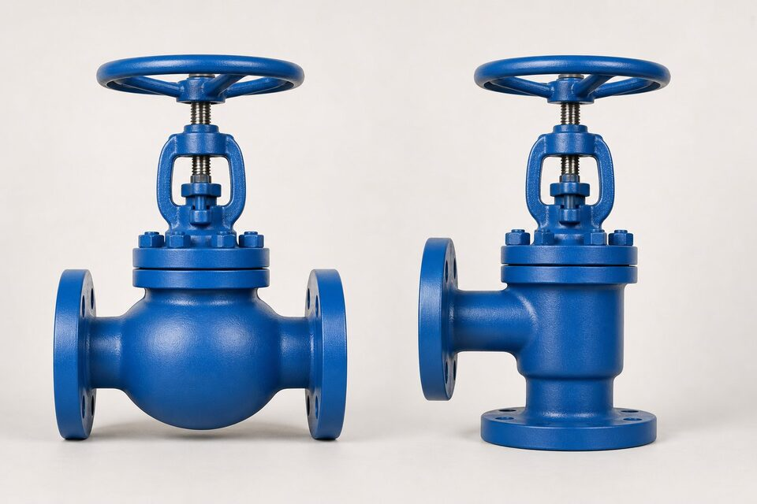

یک خانواده، دو مسیر جریان
گلوب و انگل هر دو از خانواده شیرهای سوزنیاند: دیسک به صورت عمود بر نشیمنگاه حرکت میکند و قابلیت قطع و تنظیم جریان را دارد. تفاوت اصلی در هندسه بدنه است. در گلوب، بدنه کروی شکل با دو پورت همراستا طراحی شده و جریان باید دو بار تغییر جهت دهد؛ این هندسه کنترل خوبی بر جریان میدهد اما افت فشار ایجاد میکند. در انگل، پورتها عمود بر هم قرار دارند و جریان فقط یک بار تغییر جهت میدهد؛ در نتیجه مسیر سادهتر و افت فشار کمتر است و خود شیر میتواند نقش زانوی خط را هم ایفا کند.

شیر گلوب؛ کنترل و قطع در مسیر مستقیم
گلوب رایجترین انتخاب برای نقاطی است که به تنظیم دورهای جریان نیاز دارند: مسیرهای بایپس، خطوط نمونهگیری و نقاطی که شیر نقش کنترل سبک دارد. نشیمنگاه موازی با مسیر جریان، سایش یکنواختتری ایجاد میکند و طرحهای مختلف دیسک (سوزنی، تخت و مخروطی) امکان تطبیق با سرویس را میدهند. نقطه ضعف، افت فشار ذاتی به دلیل مسیر خمیده است؛ بنابراین در خطوطی که افت فشار محدودیت طراحی دارد، باید با محاسبه تایید شود یا به طرح انگل یا کنترل فکر شود.
شیر انگل؛ وقتی جهت باید عوض شود
انگل در نقاطی میدرخشد که خط باید تغییر جهت دهد: به جای زانو به همراه شیر جداگانه، یک شیر انگل هر دو نقش را ایفا میکند و یک نقطه اتصال و نشتی بالقوه حذف میشود. مسیر سادهتر، افت فشار کمتر و شستشوی راحتتر را به همراه دارد؛ به همین دلیل در سرویسهای حاوی ذرات ساینده یا خمیرهای صنعتی، انگل عمر بهتری نشان میدهد. در نقاط تخلیه نیز، انگل اجازه میدهد جریان به سمت پایین هدایت شود. محدودیت آن، دسترسی کمتر برای برخی تعمیرات و رایج نبودن در سایزهای بسیار بزرگ است.
جدول مقایسه
| معیار | گلوب | انگل |
|---|---|---|
| جهت ورودی/خروجی | همراستا | عمود بر هم |
| تغییر جهت جریان | دو بار | یک بار |
| افت فشار | بیشتر | کمتر |
| نقش زانو در خط | خیر | بله |
| سرویس ساینده | متوسط | بهتر |
| رایج در سایز بزرگ | بله | کمتر |
| کنترل جریان | خوب | خوب |
مقایسهای فشرده برای انتخاب اولیه؛ جزئیات در بخشهای قبل آمده است.
راهنمای انتخاب
- مسیر مستقیم با نیاز به تنظیم جریان: گلوب.
- نیاز به تغییر جهت خط همراه با قطع و وصل: انگل.
- سرویس با ذرات ساینده یا گرفتگیزا: انگل به دلیل مسیر سادهتر.
- نقاط با محدودیت افت فشار: انگل یا بازنگری در طرح.
- نقاط تخلیه به سمت پایین: انگل.
- سایزهای بسیار بزرگ: گلوب رایجتر است.
جمعبندی
انتخاب بین گلوب و انگل بیش از آنکه به ترجیح سازنده بستگی داشته باشد، به هندسه خط و ماهیت سیال وابسته است: گلوب برای مسیر مستقیم با تنظیم جریان، انگل برای تغییر جهت، افت فشار کمتر و سرویسهای ساینده. با این معیارها، انتخاب به یک تصمیم ساده مهندسی تبدیل میشود و از خرید شیر نامتناسب با نقطه نصب جلوگیری میگردد.
سوالات رایج
تفاوت اصلی ساختاری گلوب و انگل چیست؟
در گلوب، ورودی و خروجی همراستا و مسیر جریان درون بدنه خمیده است؛ در انگل، ورودی و خروجی عمود بر هم قرار دارند و مسیر جریان سادهتر است.
کدام یک افت فشار کمتری دارد؟
انگل به دلیل مسیر مستقیمتر، افت فشار کمتری نسبت به گلوب دارد و در نقاطی که افت فشار محدودیت دارد ترجیح داده میشود.
انگل در چه نقاطی استفاده میشود؟
در نقاطی که تغییر جهت جریان با یک تجهیز انجام شود، مانند خروجی پمپ یا نقاط نیازمند تخلیه به سمت پایین، و در سرویسهای با ذرات ساینده.
آیا هر دو برای کنترل مناسباند؟
بله؛ هر دو با دیسک سوزنی قابلیت تنظیم جریان دارند اما طراحی اصلی آنها برای قطع و وصل و کنترل سبک است، نه کنترل دقیق پیوسته.
مطالب مرتبط
- راهنمای جامع شیر سوزنی (گلوب)
- راهنمای شیر زاویهای (Angle Valve)
- راهنمای شیرهای کنترل
- راهنمای جامع شیر دروازهای
با ذکر سایز، کلاس، متریال و نوع دیسک، شیر گلوب یا انگل به همراه مدارک تست عرضه میشود.
مشاهده صفحه محصول ← ثبت RFQ همین محصولتامین این تجهیزات را به پیشرو تجهیز فرتاک بسپارید
شرکت پیشرو تجهیز فرتاک تامینکننده تخصصی تجهیزات صنعتی برای پروژههای نفت، گاز، پتروشیمی، فولاد و نیروگاهی است. برای دریافت پیشنهاد فنی و قیمت، استعلام (RFQ) خود را ثبت کنید تا کارشناسان مهندسی فروش در کوتاهترین زمان پاسخ دهند.
- تامین شیرآلات صنعتیخانواده کامل شیر با گواهی مواد و تست
- تامین تجهیزات صنایع نفت و گازپکیج مواد مطابق وندورلیست